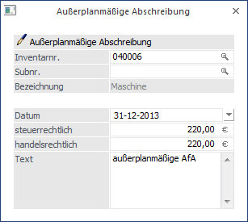
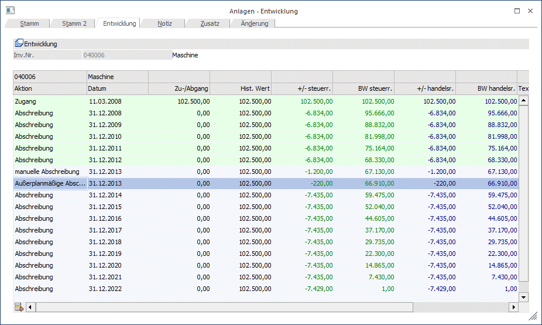

Die außerplanmäßige Abschreibung ist eine AfA, die zusätzlich zu der automatisch vom Programm errechneten Jahres-AfA (Normal- oder Plan-AfA) erfasst und ausgewiesen wird.
Durch entsprechende Kontenhinterlegung im Anlagenstamm ist es möglich, die außerplanmäßige AfA auf separate Konten in der Finanzbuchhaltung zu buchen.
Die außerplanmäßige Abschreibung finden Sie im Menüpunkt
1 Buchen
1 Außerplanmäßige Abschreibung
Hier können auch die Beträge bereits erfasster außerplanmäßiger Abschreibungen editiert werden.

Ø Inventarnr.
Eingabe der Inventarnummer, lt. Anlage im Menüpunkt
1 Stammdaten
1 Anlagenstamm.
Die Matchcode-Funktion erleichtert Ihnen die Suche.
Ø Subnr.
Eingabe der Subnummer, lt. Anlage im Menüpunkt Anlagenstamm; auch hier steht Ihnen die Matchcode-Funktion zur Verfügung.
Ø Datum
Auswahl des Datums, zu dem die außerplanmäßige Abschreibung durchgeführt werden soll. Es kann der Wirtschaftsjahres-Beginn oder das Wirtschaftsjahres-Ende ausgewählt werden. Wird der Beginn des Wirtschaftsjahres ausgewählt, wird vor einer weiteren Aktion (z. B. Teilwert-Abgang) der Buchwert vermindert und danach die Jahres-AfA neu berechnet. Bei Auswahl des Wirtschaftsjahres-Endes wird die außerplanmäßige Abschreibung am Ende aller Buchungen, auch nach der bisherigen Jahres-AfA für dieses Wirtschaftsjahr ausgeführt. Eine Neuberechnung der Jahres-AfA ist somit erst im Folgejahr wirksam.
Ø Steuerrechtlich/handelsrechtlich
Eine außerplanmäßige Abschreibung kann sowohl steuerrechtlich als auch handelsrechtlich durchgeführt werden. Daher gibt es für beide Varianten die Möglichkeit, eine Abschreibung durchzuführen.
Ø Text
Hier kann ein 255stelliger Buchungstext eingegeben werden. Dieser Text wird in den Auswertungen Historien-Journal und Anlagestammblatt angedruckt.
Hinweis
Die außerplanmäßige AfA kann auch für Wirtschaftsgüter mit einer Nutzungsdauer von 0 Jahren (z.B. Finanzanlagen) erfasst werden.
Löschen einer außerplanmäßigen Abschreibung
Außerplanmäßige Abschreibungen können nicht nur geändert sondern auch gelöscht werden. Für das Wirtschaftsgut wird dann die AfA aufgrund der hinterlegten Stammdaten errechnet. Es gibt zwei Möglichkeiten außerplanmäßige Abschreibungen zu löschen:
ü Programm Außerplanmäßige
Abschreibungen
Der Abschreibungsbetrag wird mit dem Wert 0,00
überschrieben.
ü Programm Anlagenstamm /
Entwicklung
Die Historienzeile mit der außerplanmäßigen Abschreibung wird
aktiviert und über den Entfernen-Button gelöscht.
Hinweis
Bei einer außerplanmäßigen Abschreibung wird geprüft, ob es an einem jüngeren Datum bereits eine Umbuchung gibt und eine Meldung ausgegeben. Die Umbuchung muss dann erst gelöscht werden, bevor die außerplanmäßige Abschreibung gebucht werden kann.
Die außerplanmäßige Abschreibung ist sofort nach der Buchung in der Anlagenentwicklung ersichtlich.
